Item list
All of the items currently in the game, with English localizations applied This file is automatically generated from Valheim 0.217.38 using the JotunnDoc mod found on our GitHub.
| Item | Token | Name | Type | Description |
|---|---|---|---|---|
| Abomination_attack1 | Swing attack | Swing attack | OneHandedWeapon | NULL |
| Abomination_attack2 | Slam attack | Slam attack | OneHandedWeapon | NULL |
| Abomination_attack3 | Stub to the ground | Stub to the ground | OneHandedWeapon | NULL |
| Acorn 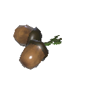 |
$item_oakseeds | Acorns | Material | Plant them to grow an oak tree. |
| Amber 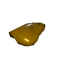 |
$item_amber | Amber | Material | <color=yellow>Valuable |
| AmberPearl 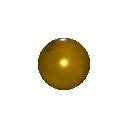 |
$item_amberpearl | Amber pearl | Material | <color=yellow>Valuable |
| AncientSeed 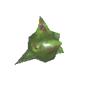 |
$item_ancientseed | Ancient seed | Material | Held against your ear, you hear tiny whisperings within... |
| ArmorBronzeChest 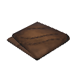 |
$item_chest_bronze | Bronze plate cuirass | Chest | A breastplate of hammered bronze. |
| ArmorBronzeLegs 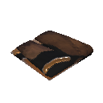 |
$item_legs_bronze | Bronze plate leggings | Legs | Bronze greaves to shield your legs. |
| ArmorCarapaceChest 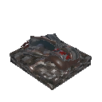 |
$item_chest_carapace | Carapace breastplate | Chest | A breastplate crafted from the burnished carapace of a giant insect. |
| ArmorCarapaceLegs 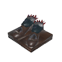 |
$item_legs_carapace | Carapace greaves | Legs | Leg guards of a rigid carapace. |
| ArmorDress1 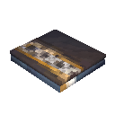 |
$item_chest_dress1 | Simple dress brown | Chest | A simple brown dress. |
| ArmorDress10 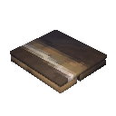 |
$item_chest_dress10 | Simple dress natural | Chest | A simple dress. |
| ArmorDress2 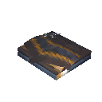 |
$item_chest_dress2 | Shawl dress brown | Chest | A brown dress accompanied by a warm shawl. |
| ArmorDress3 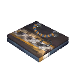 |
$item_chest_dress3 | Beaded dress brown | Chest | A brown dress accompanied by beads and silver. |
| ArmorDress4 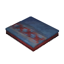 |
$item_chest_dress4 | Simple dress blue | Chest | A simple blue dress. |
| ArmorDress5 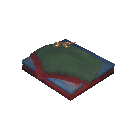 |
$item_chest_dress5 | Shawl dress blue | Chest | A blue dress accompanied by a warm shawl. |
| ArmorDress6 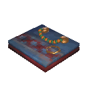 |
$item_chest_dress6 | Beaded dress blue | Chest | A blue dress accompanied by beads and bronze. |
| ArmorDress7 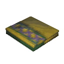 |
$item_chest_dress7 | Simple dress yellow | Chest | A simple yellow dress. |
| ArmorDress8 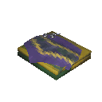 |
$item_chest_dress8 | Shawl dress yellow | Chest | A yellow dress accompanied by a warm shawl. |
| ArmorDress9 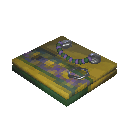 |
$item_chest_dress9 | Beaded dress yellow | Chest | A yellow dress accompanied by beads and silver. |
| ArmorFenringChest 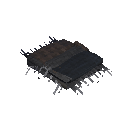 |
$item_chest_fenris | Fenris coat | Chest | The beast could draw deep breaths, so that its howl could be heard far across the land. |
| ArmorFenringLegs 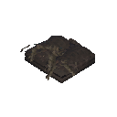 |
$item_legs_fenris | Fenris leggings | Legs | The legs of the beast were lean and strong, so that it could leap great strides. |
| ArmorIronChest 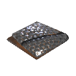 |
$item_chest_iron | Iron scale mail | Chest | An iron scale mail, this will turn all but the strongest of blows. |
| ArmorIronLegs 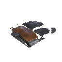 |
$item_legs_iron | Iron greaves | Legs | Iron greaves to protect your legs. |
| ArmorLeatherChest 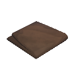 |
$item_chest_leather | Leather tunic | Chest | A tunic made from animal hide. |
| ArmorLeatherLegs 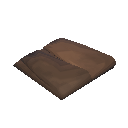 |
$item_legs_leather | Leather pants | Legs | They squeak a little when you walk. |
| ArmorMageChest 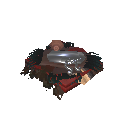 |
$item_chest_mage | Eitr-weave robe | Chest | These artfully layered robes have spells and charms sewn into every seam and fold. |
| ArmorMageLegs 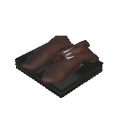 |
$item_legs_mage | Eitr-weave trousers | Legs | The trousers worn by mages are always especially tight. Discomfort fuels the focus that is needed for magic... |
| ArmorPaddedCuirass 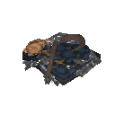 |
$item_chest_pcuirass | Padded cuirass | Chest | Finely wrought and strong enough to turn even the sharpest blades. |
| ArmorPaddedGreaves 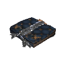 |
$item_legs_pgreaves | Padded greaves | Legs | Expertly crafted leg protection. |
| ArmorRagsChest 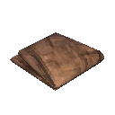 |
$item_chest_rags | Rag tunic | Chest | Better than nothing. |
| ArmorRagsLegs 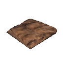 |
$item_legs_rags | Rag pants | Legs | A simple remedy for nudity. |
| ArmorRootChest 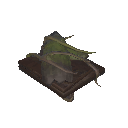 |
$item_chest_root | Root harnesk | Chest | Finely wrought and strong enough to turn even the sharpest blades. |
| ArmorRootLegs 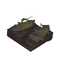 |
$item_legs_root | Root leggings | Legs | A light armor oddly woven together by ancient roots and bark. |
| ArmorTrollLeatherChest 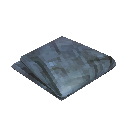 |
$item_chest_trollleather | Troll leather tunic | Chest | Trolls are hard to skin but their leather is tough and warm. |
| ArmorTrollLeatherLegs 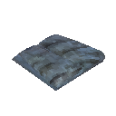 |
$item_legs_trollleather | Troll leather pants | Legs | Leggings of tough troll hide. |
| ArmorTunic1 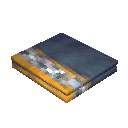 |
$item_chest_tunic1 | Simple tunic blue | Chest | A simple blue tunic. |
| ArmorTunic10 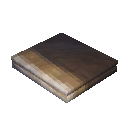 |
$item_chest_tunic10 | Simple tunic natural | Chest | A simple tunic. |
| ArmorTunic2 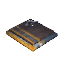 |
$item_chest_tunic2 | Cape tunic blue | Chest | A blue tunic accompanied by a cape. |
| ArmorTunic3 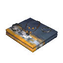 |
$item_chest_tunic3 | Beaded tunic blue | Chest | A blue tunic accompanied by beads and silver. |
| ArmorTunic4 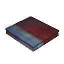 |
$item_chest_tunic4 | Simple tunic red | Chest | A simple red tunic. |
| ArmorTunic5 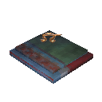 |
$item_chest_tunic5 | Cape tunic red | Chest | A red tunic accompanied by a cape. |
| ArmorTunic6 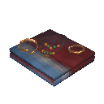 |
$item_chest_tunic6 | Beaded tunic red | Chest | A red tunic accompanied by beads and bronze. |
| ArmorTunic7 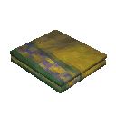 |
$item_chest_tunic7 | Simple tunic yellow | Chest | A simple yellow tunic. |
| ArmorTunic8 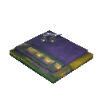 |
$item_chest_tunic8 | Cape tunic yellow | Chest | A yellow tunic accompanied by a cape. |
| ArmorTunic9 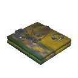 |
$item_chest_tunic9 | Beaded tunic yellow | Chest | A yellow tunic accompanied by beads and silver. |
| ArmorWolfChest 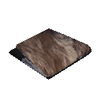 |
$item_chest_wolf | Wolf armor chest | Chest | A wolfskin jerkin, warm and wild-looking. It protects against the cold. |
ArmorWolfLegs |
$item_legs_wolf | Wolf armor legs | Legs | Shaggy breeches of wolfskin. |
| ArrowBronze 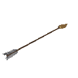 |
$item_arrow_bronze | Bronzehead arrow | Ammo | Sharper than flint. A sleek messenger of death. |
| ArrowCarapace 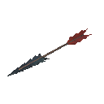 |
$item_arrow_carapace | Carapace arrow | Ammo | Heavy and pointy, this one's gonna hurt. |
ArrowFire |
$item_arrow_fire | Fire arrow | Ammo | This arrow burns whatever it pierces. |
| ArrowFlint 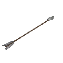 |
$item_arrow_flint | Flinthead arrow | Ammo | A hide-breaker with a head of flint. |
| ArrowFrost 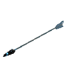 |
$item_arrow_frost | Frost arrow | Ammo | A shard of piercing ice. |
| ArrowIron 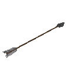 |
$item_arrow_iron | Ironhead arrow | Ammo | Capped with iron and flighted with dark feathers. |
| ArrowNeedle |
$item_arrow_needle | Needle arrow | Ammo | The final stitch. |
| ArrowObsidian |
$item_arrow_obsidian | Obsidian arrow | Ammo | A sliver of darkness. |
| ArrowPoison |
$item_arrow_poison | Poison arrow | Ammo | A bitter sting from afar. |
| ArrowSilver |
$item_arrow_silver | Silver arrow | Ammo | A needle to calm restless spirits. |
| ArrowWood |
$item_arrow_wood | Wood arrow | Ammo | An arrow of sharpened wood. |
| AtgeirBlackmetal |
$item_atgeir_blackmetal | Blackmetal atgeir | TwoHandedWeapon | A vicious hewing-axe of almost unbreakable black metal. |
| AtgeirBronze |
$item_atgeir_bronze | Bronze atgeir | TwoHandedWeapon | A true warrior's tool. |
| AtgeirHimminAfl |
$item_atgeir_himminafl | Himminafl | TwoHandedWeapon | It might not be a hammer, but Thor himself would still approve of this weapon. |
| AtgeirIron |
$item_atgeir_iron | Iron atgeir | TwoHandedWeapon | Blood-drinker, skull-cracker, death-bringer. |
| AxeBlackMetal |
$item_axe_blackmetal | Blackmetal axe | OneHandedWeapon | A perfectly-balanced axe forged from dark metal with an emerald sheen. |
| AxeBronze |
$item_axe_bronze | Bronze axe | OneHandedWeapon | A bright and burnished blade, curved like a smile. |
| AxeFlint |
$item_axe_flint | Flint axe | OneHandedWeapon | Sharper than stone. |
| AxeIron |
$item_axe_iron | Iron axe | OneHandedWeapon | Sharp and strong, a woodcutter's friend. |
| AxeJotunBane |
$item_axe_jotunbane | Jotun Bane | OneHandedWeapon | Not even the giants of old could weather the poisonous bite of this weapon. |
| AxeStone |
$item_axe_stone | Stone axe | OneHandedWeapon | A crude axe for tree-felling. |
| babyseeker_attack | Dragon claw left | Dragon claw left | OneHandedWeapon | NULL |
| BarberKit |
$item_barberkit | Barber kit | Misc | A kit fit for the finest of barbers. |
| Barley |
$item_barley | Barley | Material | A bundle of barley. |
| BarleyFlour |
$item_barleyflour | Barley flour | Material | Great for baking bread. |
| BarleyWine |
$item_barleywine | Fire resistance barley wine | Consumable | Fortifies you against fire. |
| BarleyWineBase |
$item_barleywinebase | Barley wine base: Fire resistance | Material | Needs to be fermented. |
| bat_melee | Bat melee | Bat melee | OneHandedWeapon | NULL |
| Battleaxe |
$item_battleaxe | Battleaxe | TwoHandedWeapon | Skull-splitter, a warrior's joy. |
| BattleaxeCrystal |
$item_battleaxe_crystal | Crystal battleaxe | TwoHandedWeapon | It's see-through and tears through. |
| Beard1 |
$customization_beard01 | Long 1 | Customization | NULL |
| Beard10 |
$customization_beard10 | Braided 4 | Customization | NULL |
| Beard11 |
$customization_beard11 | Thick 2 | Customization | NULL |
| Beard12 |
$customization_beard12 | Royal 1 | Customization | NULL |
| Beard13 |
$customization_beard13 | Royal 2 | Customization | NULL |
| Beard14 |
$customization_beard14 | Braided 5 | Customization | NULL |
| Beard15 |
$customization_beard15 | Short 4 | Customization | NULL |
| Beard16 |
$customization_beard16 | Stonedweller | Customization | NULL |
| Beard17 |
$customization_beard17 | Neat | Customization | NULL |
| Beard18 |
$customization_beard18 | Royal 3 | Customization | NULL |
| Beard19 |
$customization_beard19 | Bushy | Customization | NULL |
| Beard2 |
$customization_beard02 | Long 2 | Customization | NULL |
| Beard20 |
$customization_beard20 | Spiky | Customization | NULL |
| Beard21 |
$customization_beard21 | Short 5 | Customization | NULL |
| Beard3 |
$customization_beard03 | Short 1 | Customization | NULL |
| Beard4 |
$customization_beard04 | Short 2 | Customization | NULL |
| Beard5 |
$customization_beard05 | Braided 1 | Customization | NULL |
| Beard6 |
$customization_beard06 | Braided 2 | Customization | NULL |
| Beard7 |
$customization_beard07 | Short 3 | Customization | NULL |
| Beard8 |
$customization_beard08 | Thick 1 | Customization | NULL |
| Beard9 |
$customization_beard09 | Braided 3 | Customization | NULL |
| BeardNone | $customization_nobeard | No beard | Customization | NULL |
| BeechSeeds |
$item_beechseeds | Beech seeds | Material | Plant them to grow a beech tree. |
BeltStrength |
$item_beltstrength | Megingjord | Utility | Gives the wearer superhuman strength. |
| Bilebag |
$item_bilebag | Bilebag | Material | Caustic bile drawn from the corpse of a gjall. |
| BirchSeeds |
$item_birchseeds | Birch seeds | Material | Plant them to grow a birch tree. |
| BlackCore |
$item_blackcore | Black core | Material | Filled to the brim with ancient power. |
| BlackMarble |
$item_blackmarble | Black marble | Material | A block of solid stone, seamed with shifting colors. |
| BlackMetal |
$item_blackmetal | Black metal | Material | A heavy bar of dark metal. |
| BlackMetalScrap |
$item_blackmetalscrap | Black metal scrap | Material | A twisted hunk of dark metal. |
| BlackSoup |
$item_blacksoup | Black soup | Consumable | A perfect balance of sweetness and acidity. |
| blob_attack_aoe | fart | fart | OneHandedWeapon | NULL |
| blobelite_attack_aoe | fart | fart | OneHandedWeapon | NULL |
| blobtar_attack | fireballattack | fireballattack | OneHandedWeapon | NULL |
| Bloodbag |
$item_bloodbag | Bloodbag | Material | The contents of a leech. Ick! |
| BloodPudding |
$item_bloodpudding | Blood pudding | Consumable | It's bloody tasty. |
Blueberries |
$item_blueberries | Blueberries | Consumable | Tiny but tasty. |
| boar_base_attack | boar attack1 | boar attack1 | OneHandedWeapon | NULL |
| BoarJerky |
$item_boarjerky | Boar jerky | Consumable | Lean and salty. |
| BoltBlackmetal |
$item_bolt_blackmetal | Blackmetal bolt | Ammo | A sleek bolt of dark metal. |
| BoltBone |
$item_bolt_bone | Bone bolt | Ammo | A crude bolt of yellowed bone. |
| BoltCarapace |
$item_bolt_carapace | Carapace bolt | Ammo | A heavy and solid bolt. |
| BoltIron |
$item_bolt_iron | Iron bolt | Ammo | A sturdy iron missile. |
| BombBile |
$item_bilebomb | Bile bomb | OneHandedWeapon | Handle with care. |
| BombOoze |
$item_oozebomb | Ooze bomb | OneHandedWeapon | The stench is unbearable... |
| BoneFragments |
$item_bonefragments | Bone fragments | Material | A pile of shattered bones. |
| bonemass_attack_aoe | heal | heal | OneHandedWeapon | NULL |
| bonemass_attack_punch | slap | slap | OneHandedWeapon | NULL |
| bonemass_attack_spawn | heal | heal | OneHandedWeapon | NULL |
| bonemass_attack_throw | slime throw | slime throw | OneHandedWeapon | NULL |
| Bow |
$item_bow | Crude bow | Bow | A crude but functional bow. |
| BowDraugrFang |
$item_bow_draugrfang | Draugr fang | Bow | Dark wood strung with glistening sinew. A vicious thing. |
| BowFineWood |
$item_bow_finewood | Finewood bow | Bow | A simple bow of strong and supple wood. |
| BowHuntsman |
$item_bow_huntsman | Huntsman bow | Bow | Finely worked and strung. A huntsman's joy. |
| BowSpineSnap |
$item_bow_snipesnap | Spinesnap | Bow | Using this bow is backbreaking work but so worth it. |
| Bread |
$item_bread | Bread | Consumable | A tasty loaf of bread. |
| BreadDough |
$item_breaddough | Bread dough | Material | Ready for the oven. |
| Bronze |
$item_bronze | Bronze | Material | A strong alloy of copper and tin. |
| BronzeNails |
$item_bronzenails | Bronze nails | Material | Used in construction of ships and furniture. |
| BronzeScrap |
$item_bronzescrap | Scrap bronze | Material | It's old and oxidized but can be smelted and used again. |
| BugMeat |
$item_bug_meat | Seeker meat | Material | When you crack open their shells, the meat within is tender and succulent. |
| CapeDeerHide |
$item_cape_deerhide | Deer hide cape | Shoulder | Rustic chic. |
| CapeFeather |
$item_cape_feather | Feather cape | Shoulder | Donning this cape makes you feel lighter, almost as if you could fly! |
| CapeLinen |
$item_cape_linen | Linen cape | Shoulder | A simple traveler's cape. |
| CapeLox |
$item_cape_lox | Lox cape | Shoulder | A pelt from one of the great beasts, thick and warm. |
| CapeOdin |
$item_cape_odin | Cape of Odin | Shoulder | Odin's finest warriors deserve the finest cloth. |
CapeTest |
CAPE TEST | CAPE TEST | Shoulder | Da cape |
| CapeTrollHide |
$item_cape_trollhide | Troll hide cape | Shoulder | Trollskin is tough and supple. |
| CapeWolf |
$item_cape_wolf | Wolf fur cape | Shoulder | Wolves are natural survivors. This one was just unlucky. Now its pelt will warm you in the snow. |
| Carapace |
$item_carapace | Carapace | Material | A plate of chitinous armor. |
| Carrot |
$item_carrot | Carrot | Consumable | An orange treat. |
| CarrotSeeds |
$item_carrotseeds | Carrot seeds | Material | Plant these if you like carrots... |
| CarrotSoup |
$item_carrotsoup | Carrot soup | Consumable | A warm tasty soup made of mostly carrots. |
| Chain |
$item_chain | Chain | Material | A link of iron chain. |
| chest_hildir1 |
$item_chest_hildir1 | Hildir's brass chest | Misc | Property of Hildir, please return if found. |
| chest_hildir2 |
$item_chest_hildir2 | Hildir's silver chest | Misc | Property of Hildir, please return if found. |
| chest_hildir3 |
$item_chest_hildir3 | Hildir's bronze chest | Misc | Property of Hildir, please return if found. |
| ChickenEgg |
$item_chicken_egg | Egg | Misc | Keep it warm to see what comes out.. but what came first, really? |
| ChickenMeat |
$item_chicken_meat | Chicken meat | Material | All chickens bear the ancestral curse of being delicious. |
| Chitin |
$item_chitin | Chitin | Material | A shard of crustacean shell. |
Cloudberry |
$item_cloudberries | Cloudberries | Consumable | The gold of the forest. |
| Club |
$item_club | Club | OneHandedWeapon | A crude but useful weapon. |
| Coal |
$item_coal | Coal | Material | A lump of coal. |
| Coins |
$item_coins | Coins | Material | <color=yellow>Valuable |
| CookedBugMeat |
$item_bug_meat_cooked | Cooked seeker meat | Consumable | Succulent white meat. A true delicacy. |
| CookedChickenMeat |
$item_chicken_meat_cooked | Cooked chicken meat | Consumable | It tastes like chicken. |
| CookedDeerMeat |
$item_deer_meat_cooked | Cooked deer meat | Consumable | All that running paid off. |
| CookedEgg |
$item_egg_cooked | Cooked egg | Consumable | Sunny side up! |
| CookedHareMeat |
$item_hare_meat_cooked | Cooked hare meat | Consumable | Stringy but flavorful. |
| CookedLoxMeat |
$item_loxmeat_cooked | Cooked lox meat | Consumable | A great hunk of tender meat, food fit for Valhalla! |
| CookedMeat |
$item_boar_meat_cooked | Cooked boar meat | Consumable | An earthly taste. |
| CookedWolfMeat |
$item_wolf_meat_cooked | Cooked wolf meat | Consumable | A wild taste. |
| Copper |
$item_copper | Copper | Material | A bar of pure copper ready to be worked. |
| CopperOre |
$item_copperore | Copper ore | Material | Unrefined copper. Needs to be refined in a smelter. |
CopperScrap |
$item_copperscrap | Copper scrap | Material | One person's scrap is another person's treasure. |
| CrossbowArbalest |
$item_crossbow_arbalest | Arbalest | Bow | A slow but powerful weapon. |
| CryptKey |
$item_cryptkey | Swamp key | Misc | Partly covered in caked mud, it smells foetid. |
| Crystal |
$item_crystal | Crystal | Material | A shard of crystal from deep within the earth. |
| Cultivator |
$item_cultivator | Cultivator | Tool | A farming tool for tilling soil. |
| Dandelion |
$item_dandelion | Dandelion | Material | A dandelion. |
| Deathsquito_sting | Wraith melee | Wraith melee | OneHandedWeapon | NULL |
| DeerHide |
$item_deerhide | Deer hide | Material | A cleaned hide from a deer. |
| DeerMeat |
$item_deer_meat | Deer meat | Material | |
| DeerStew |
$item_deerstew | Deer stew | Consumable | Fall-apart tender. |
| Demister |
$item_demister | Wisplight | Utility | A bound wisp to guide you through the thickest of mists. |
| dragon_bite | Dragon claw left | Dragon claw left | OneHandedWeapon | NULL |
| dragon_claw_left | Dragon claw left | Dragon claw left | OneHandedWeapon | NULL |
| dragon_claw_right | Dragon claw left | Dragon claw left | OneHandedWeapon | NULL |
| dragon_coldbreath | dragon breath | dragon breath | OneHandedWeapon | NULL |
| dragon_coldbreath_OLD | dragon breath | dragon breath | OneHandedWeapon | NULL |
| dragon_spit_shotgun | cold ball | cold ball | OneHandedWeapon | NULL |
| dragon_taunt | scream | scream | OneHandedWeapon | NULL |
| DragonEgg |
$item_dragonegg | Dragon egg | Misc | Far heavier than it looks, with a faint humming sound from within. |
| DragonTear |
$item_dragontear | Dragon tear | Material | The last frozen tear of a dragon, pulsating with mysterious energy. |
| draugr_arrow |
Ironhead arrow | Ironhead arrow | Ammo | Fire it with a bow. |
| draugr_axe |
Dragur axe | Dragur axe | OneHandedWeapon | NULL |
| draugr_bow |
Bow | Bow | Bow | A simple bow. |
| draugr_sword |
Dragur axe | Dragur axe | OneHandedWeapon | NULL |
| Dverger_melee | Club | Club | OneHandedWeapon | A crude but useful weapon. |
| DvergerArbalest |
$item_crossbow_arbalest | Arbalest | Utility | A slow but powerful weapon. |
DvergerArbalest_shoot |
$item_crossbow_arbalest | Arbalest | OneHandedWeapon | A slow but powerful weapon. |
| DvergerHairFemale |
Iron plate armor | Iron plate armor | Legs | An iron scale mail, this will turn all but the strongest of blows. |
| DvergerHairMale |
Iron plate armor | Iron plate armor | Helmet | An iron scale mail, this will turn all but the strongest of blows. |
| DvergerMistile | Club | Club | OneHandedWeapon | A crude but useful weapon. |
| DvergerStaffBlocker | Club | Club | OneHandedWeapon | A crude but useful weapon. |
| DvergerStaffFire |
Club | Club | Utility | A crude but useful weapon. |
| DvergerStaffFire_clusterbomb | Club | Club | OneHandedWeapon | A crude but useful weapon. |
| DvergerStaffFire_fireball | Club | Club | OneHandedWeapon | A crude but useful weapon. |
| DvergerStaffHeal |
Club | Club | Utility | A crude but useful weapon. |
| DvergerStaffHeal_heal | Club | Club | OneHandedWeapon | A crude but useful weapon. |
| DvergerStaffIce |
Club | Club | Utility | A crude but useful weapon. |
| DvergerStaffIce_icebolt | Club | Club | OneHandedWeapon | A crude but useful weapon. |
| DvergerStaffNova | Club | Club | OneHandedWeapon | A crude but useful weapon. |
| DvergerStaffSupport |
Club | Club | Utility | A crude but useful weapon. |
| DvergerStaffSupport_buff | Club | Club | OneHandedWeapon | A crude but useful weapon. |
| DvergerSuitArbalest |
Iron plate armor | Iron plate armor | Chest | An iron scale mail, this will turn all but the strongest of blows. |
| DvergerSuitFire |
Iron plate armor | Iron plate armor | Chest | An iron scale mail, this will turn all but the strongest of blows. |
| DvergerSuitIce |
Iron plate armor | Iron plate armor | Chest | An iron scale mail, this will turn all but the strongest of blows. |
| DvergerSuitSupport |
Iron plate armor | Iron plate armor | Chest | An iron scale mail, this will turn all but the strongest of blows. |
| DvergrKey |
$item_dvergrkey | Sealbreaker | Misc | An object used to break a Dverger seal. |
| DvergrKeyFragment |
$item_dvergrkeyfragment | Sealbreaker fragment | Material | A fragment of a Dvergr sealbreaker. |
| DvergrNeedle |
$item_dvergrneedle | Dvergr extractor | Material | Looks like a perfect piece for piercing something... |
| Eikthyr_antler | StagAttack1 | StagAttack1 | OneHandedWeapon | NULL |
| Eikthyr_charge | StagAttack2 | StagAttack2 | OneHandedWeapon | NULL |
| Eikthyr_flegs_OLD | StagAttack1 | StagAttack1 | OneHandedWeapon | NULL |
| Eikthyr_stomp | slap | slap | OneHandedWeapon | NULL |
| Eitr |
$item_eitr | Refined eitr | Material | This is the stuff of life, the poison that consumes itself. The Dvergr refine it to use in their esoteric designs. |
| ElderBark |
$item_elderbark | Ancient bark | Material | An ancient and sturdy material. |
| Entrails |
$item_entrails | Entrails | Material | A slimy length of something's insides. |
| Eyescream |
$item_eyescream | Eyescream | Consumable | Crispy cool and creamy. |
| Feathers |
$item_feathers | Feathers | Material | A small pile of feathers. |
| Fenring_attack_claw | claw | claw | OneHandedWeapon | NULL |
| Fenring_attack_fireclaw | claw | claw | OneHandedWeapon | NULL |
| Fenring_attack_fireclaw_double | claw | claw | OneHandedWeapon | NULL |
| Fenring_attack_flames | Fenring cultist flames | Fenring cultist flames | OneHandedWeapon | NULL |
| Fenring_attack_frost | Fenring cultist frost | Fenring cultist frost | OneHandedWeapon | NULL |
| Fenring_attack_iceclaw | claw | claw | OneHandedWeapon | NULL |
| Fenring_attack_iceclaw_double | claw | claw | OneHandedWeapon | NULL |
| Fenring_attack_IceNova | Club | Club | OneHandedWeapon | A crude but useful weapon. |
| Fenring_attack_jump | claw | claw | OneHandedWeapon | NULL |
| Fenring_taunt | scream | scream | OneHandedWeapon | NULL |
| FineWood |
$item_finewood | Fine wood | Material | High quality wood for fine carpentry. |
| FirCone |
$item_fircone | Fir cone | Material | Plant it to grow a fir tree. |
| FireworksRocket_Blue |
$item_fireworkrocket_blue | Blue firework | Material | This rocket's blasting off again! |
| FireworksRocket_Cyan |
$item_fireworkrocket_cyan | Cyan firework | Material | This rocket's blasting off again! |
| FireworksRocket_Green |
$item_fireworkrocket_green | Green firework | Material | This rocket's blasting off again! |
| FireworksRocket_Purple |
$item_fireworkrocket_purple | Purple firework | Material | This rocket's blasting off again! |
| FireworksRocket_Red |
$item_fireworkrocket_red | Red firework | Material | This rocket's blasting off again! |
| FireworksRocket_White |
$item_fireworkrocket_white | Basic firework | Material | This rocket's blasting off again! |
| FireworksRocket_Yellow |
$item_fireworkrocket_yellow | Yellow firework | Material | This rocket's blasting off again! |
| Fish1 |
$animal_fish1 | Perch | Fish | A tasty whitemeat fish. |
| Fish10 |
$animal_fish10 | Northern salmon | Fish | This fish likes the water to be almost freezing cold. |
| Fish11 |
$animal_fish11 | Magmafish | Fish | Some say this fish lays its eggs directly in molten lava! |
| Fish12 |
$animal_fish12 | Pufferfish | Fish | Tasty when cooked right, but the flavour has a bit of a sting. |
| Fish2 |
$animal_fish2 | Pike | Fish | A freshwater fish that needs a lot of seasoning. |
| Fish3 |
$animal_fish3 | Tuna | Fish | Chicken of the sea... |
| Fish4_cave |
$animal_fish4 | Tetra | Fish | Spending its whole life in the dark, it has no need for eyes. |
| Fish5 |
$animal_fish5 | Trollfish | Fish | This fish is a nuisance in the local streams. |
| Fish6 |
$animal_fish6 | Giant herring | Fish | Fermented, this fish will smell worse than the swamp it came from. |
| Fish7 |
$animal_fish7 | Grouper | Fish | Best served with lots of carbs! |
| Fish8 |
$animal_fish8 | Coral cod | Fish | It has seen some things... Some very haunting things... |
| Fish9 |
$animal_fish9 | Anglerfish | Fish | The dangling light makes it easier to see that pretty little face! |
| FishAndBread |
$item_fishandbread | Fish 'n' bread | Consumable | Bounty from both land and sea. |
| FishAndBreadUncooked |
$item_fishandbreaduncooked | Uncooked fish n' bread | Material | Ready for the oven. |
| FishAnglerRaw |
$item_fish_raw | Raw fish | Material | A good catch. |
| FishCooked |
$item_fish_cooked | Cooked fish | Consumable | A tasty side of smoked fish. |
| FishingBait |
$item_fishingbait | Fishing bait | Ammo | Common dvergr fishing bait. Fishing rod sold separately. |
| FishingBaitAshlands |
$item_fishingbait_ashlands | Hot fishing bait | Ammo | Some fish already like it where the waters are warm, and this bait brings the temperature close to boiling. |
| FishingBaitCave |
$item_fishingbait_cave | Cold fishing bait | Ammo | This bait doesn't look like much, but it's a treat to fish that live where it's cold and dark. |
| FishingBaitDeepNorth |
$item_fishingbait_deepnorth | Frosty fishing bait | Ammo | It's not very nutritious, so the only fish that'll take this bait are the ones that are used to just eating ice. |
FishingBaitForest |
$item_fishingbait_forest | Mossy fishing bait | Ammo | Dead trolls in the forest often attract a fish or two, speed up the process with this bait! |
| FishingBaitMistlands |
$item_fishingbait_mistlands | Misty fishing bait | Ammo | A bait to guide the fish to you through shrouded waters. |
| FishingBaitOcean |
$item_fishingbait_ocean | Heavy fishing bait | Ammo | This bait sinks deep, deep enough to lure the fish swimming along the very bottom of the sea. |
| FishingBaitPlains |
$item_fishingbait_plains | Stingy fishing bait | Ammo | You're not immune to deathsquito bites, and the fish here aren't immune to this snack! |
FishingBaitSwamp |
$item_fishingbait_swamp | Sticky fishing bait | Ammo | It might smell foul, but the fish drawn to this bait are used to so much worse. |
| FishingRod |
$item_fishingrod | Fishing rod | TwoHandedWeapon | Standard issue dvergr fishing rod. |
| FishRaw |
$item_fish_raw | Raw fish | Material | A good catch. |
| FishWraps |
$item_fishwraps | Fish wraps | Consumable | Bread and fish, what more to wish? |
| FistFenrirClaw |
$item_fistweapon_fenris | Flesh rippers | TwoHandedWeapon | If claws work for wolves, why not for a viking? |
| Flametal |
$item_flametal | Flametal | Material | The pure, shimmering core of a meteorite. |
| FlametalOre |
$item_flametalore | Flametal ore | Material | Warm to the touch with glowing veins of strange metal. Needs to be refined in a smelter. |
| Flax |
$item_flax | Flax | Material | Unspun fibers from a flax plant. |
| Flint |
$item_flint | Flint | Material | Can be shaped into sharp blades. |
| FreezeGland |
$item_freezegland | Freeze gland | Material | This mysterious organ keeps a perfect temperature. |
| gd_king_punch | jaws | jaws | OneHandedWeapon | NULL |
| gd_king_rootspawn | spawn | spawn | OneHandedWeapon | NULL |
| gd_king_scream | scream | scream | OneHandedWeapon | NULL |
| gd_king_shoot | shaman attack | shaman attack | OneHandedWeapon | NULL |
| gd_king_stomp | jaws | jaws | OneHandedWeapon | NULL |
| Ghost_attack | jaws | jaws | OneHandedWeapon | NULL |
| GiantBloodSack |
$item_bloodclot | Blood clot | Material | Be careful not to puncture this while you carry it... |
| gjall_attack_egg | egg drop | egg drop | OneHandedWeapon | NULL |
| gjall_attack_shake | gjall shake | gjall shake | OneHandedWeapon | NULL |
| gjall_attack_spit | gjall spit | gjall spit | OneHandedWeapon | NULL |
| gjall_attack_taunt | gjall taunt | gjall taunt | OneHandedWeapon | NULL |
GoblinArmband |
Iron plate armor | Iron plate armor | Chest | An iron scale mail, this will turn all but the strongest of blows. |
GoblinBrute_ArmGuard |
Iron plate armor | Iron plate armor | Chest | An iron scale mail, this will turn all but the strongest of blows. |
| GoblinBrute_Attack |
Brute sword | Brute sword | OneHandedWeapon | NULL |
GoblinBrute_Backbones |
Iron plate armor | Iron plate armor | Helmet | An iron scale mail, this will turn all but the strongest of blows. |
GoblinBrute_ExecutionerCap |
Iron plate armor | Iron plate armor | Helmet | An iron scale mail, this will turn all but the strongest of blows. |
| GoblinBrute_HipCloth |
Iron plate armor | Iron plate armor | Legs | An iron scale mail, this will turn all but the strongest of blows. |
GoblinBrute_LegBones |
Iron plate armor | Iron plate armor | Utility | An iron scale mail, this will turn all but the strongest of blows. |
| GoblinBrute_RageAttack |
Brute sword | Brute sword | OneHandedWeapon | NULL |
GoblinBrute_ShoulderGuard |
Iron plate armor | Iron plate armor | Shoulder | An iron scale mail, this will turn all but the strongest of blows. |
| GoblinBrute_Taunt |
Brute taunt | Brute taunt | OneHandedWeapon | NULL |
| GoblinBruteBros_Attack |
Brute sword | Brute sword | OneHandedWeapon | NULL |
| GoblinBruteBros_RageAttack |
Brute sword | Brute sword | OneHandedWeapon | NULL |
| GoblinClub |
Club | Club | OneHandedWeapon | A crude but useful weapon. |
GoblinHelmet |
Iron plate armor | Iron plate armor | Chest | An iron scale mail, this will turn all but the strongest of blows. |
| GoblinKing_Beam | dragon breath | dragon breath | OneHandedWeapon | NULL |
| GoblinKing_Meteors | spawn | spawn | OneHandedWeapon | NULL |
| GoblinKing_Nova | slap | slap | OneHandedWeapon | NULL |
| GoblinKing_Taunt | scream | scream | OneHandedWeapon | NULL |
GoblinLegband |
Iron plate armor | Iron plate armor | Chest | An iron scale mail, this will turn all but the strongest of blows. |
| GoblinLoin |
Iron plate armor | Iron plate armor | Legs | An iron scale mail, this will turn all but the strongest of blows. |
| GoblinShaman_attack_fireball | fireballattack | fireballattack | OneHandedWeapon | NULL |
| GoblinShaman_attack_fireball_hildir |
fireballattack | fireballattack | OneHandedWeapon | NULL |
GoblinShaman_attack_poke |
Club | Club | OneHandedWeapon | A crude but useful weapon. |
| GoblinShaman_attack_protect | heal | heal | OneHandedWeapon | NULL |
GoblinShaman_attack_protect_hildir |
heal | heal | OneHandedWeapon | NULL |
| GoblinShaman_Headdress_antlers |
Club | Club | Helmet | A crude but useful weapon. |
| GoblinShaman_Headdress_feathers |
Club | Club | Helmet | A crude but useful weapon. |
| GoblinShaman_Staff_Bones |
Club | Club | Utility | A crude but useful weapon. |
| GoblinShaman_Staff_Feathers |
Club | Club | Utility | A crude but useful weapon. |
| GoblinShaman_Staff_Hildir |
Club | Club | Utility | A crude but useful weapon. |
GoblinShoulders |
Iron plate armor | Iron plate armor | Chest | An iron scale mail, this will turn all but the strongest of blows. |
| GoblinSpear |
Flint spear | Flint spear | OneHandedWeapon | [item_spearflint_description] |
| GoblinSword |
Bronze sword | Bronze sword | OneHandedWeapon | Blood-drinker. A thirsty friend. |
| GoblinTorch |
Torch | Torch | OneHandedWeapon | It brings light and warmth, drives back the darkness. |
| GoblinTotem |
$item_goblintotem | Fuling totem | Misc | Channels the ancient power of Yagluth. |
| Greydwarf_attack | jaws | jaws | OneHandedWeapon | NULL |
| Greydwarf_elite_attack | jaws | jaws | OneHandedWeapon | NULL |
| Greydwarf_shaman_attack | shaman attack | shaman attack | OneHandedWeapon | NULL |
| Greydwarf_shaman_heal | heal | heal | OneHandedWeapon | NULL |
| Greydwarf_throw | throw stone | throw stone | OneHandedWeapon | NULL |
| GreydwarfEye |
$item_greydwarfeye | Greydwarf eye | Material | The milky eyeball of a Greydwarf. |
| Greyling_attack | jaws | jaws | OneHandedWeapon | NULL |
| Guck |
$item_guck | Guck | Material | It smells like fermented fish. |
| Hair1 |
$customization_hair01 | Ponytail 1 | Customization | NULL |
| Hair10 |
$customization_hair10 | Side swept 2 | Customization | NULL |
| Hair10_2 |
$customization_hair06 | Long 1 | Customization | NULL |
| Hair11 |
$customization_hair11 | Braided 2 | Customization | NULL |
| Hair11_2 |
$customization_hair06 | Long 1 | Customization | NULL |
| Hair11_3 |
$customization_hair06 | Long 1 | Customization | NULL |
| Hair12 |
$customization_hair12 | Braided 3 | Customization | NULL |
| Hair12_2 |
$customization_hair06 | Long 1 | Customization | NULL |
| Hair13 |
$customization_hair13 | Braided 4 | Customization | NULL |
| Hair13_2 |
$customization_hair06 | Long 1 | Customization | NULL |
| Hair13_3 |
$customization_hair06 | Long 1 | Customization | NULL |
| Hair14 |
$customization_hair14 | Side swept 3 | Customization | NULL |
| Hair14_2 |
$customization_hair06 | Long 1 | Customization | NULL |
| Hair15 |
$customization_hair15 | Pulled back curls | Customization | NULL |
| Hair15_2 |
$customization_hair06 | Long 1 | Customization | NULL |
| Hair15_3 |
$customization_hair06 | Long 1 | Customization | NULL |
| Hair16 |
$customization_hair16 | Gathered braids | Customization | NULL |
| Hair16_2 |
$customization_hair06 | Long 1 | Customization | NULL |
| Hair17 |
$customization_hair17 | Neat braids | Customization | NULL |
| Hair17_2 |
$customization_hair06 | Long 1 | Customization | NULL |
| Hair18 |
$customization_hair18 | Royal braids | Customization | NULL |
| Hair18_2 |
$customization_hair06 | Long 1 | Customization | NULL |
| Hair19 |
$customization_hair19 | Curls 1 | Customization | NULL |
| Hair2 |
$customization_hair02 | Ponytail 2 | Customization | NULL |
| Hair20 |
$customization_hair20 | Curls 2 | Customization | NULL |
| Hair21 |
$customization_hair21 | Twin buns | Customization | NULL |
| Hair21_2 |
$customization_hair06 | Long 1 | Customization | NULL |
| Hair22 |
$customization_hair22 | Single bun | Customization | NULL |
| Hair22_2 |
$customization_hair06 | Long 1 | Customization | NULL |
| Hair23 |
$customization_hair23 | Short curls | Customization | NULL |
| Hair24 |
$customization_hair24 | Shaved and braided | Customization | NULL |
| Hair24_2 |
$customization_hair06 | Long 1 | Customization | NULL |
| Hair24_3 |
$customization_hair06 | Long 1 | Customization | NULL |
| Hair25 |
$customization_hair25 | Single bun 2 | Customization | NULL |
| Hair26 |
$customization_hair26 | Short locs | Customization | NULL |
| Hair27 |
$customization_hair27 | Braids of strength | Customization | NULL |
| Hair27_2 |
$customization_hair06 | Long 1 | Customization | NULL |
| Hair27_3 |
$customization_hair06 | Long 1 | Customization | NULL |
| Hair28 |
$customization_hair28 | Merchant's braid | Customization | NULL |
| Hair28_2 |
$customization_hair06 | Long 1 | Customization | NULL |
| Hair28_3 |
$customization_hair06 | Long 1 | Customization | NULL |
| Hair29 |
$customization_hair29 | Loose 2 | Customization | NULL |
| Hair29_2 |
$customization_hair06 | Long 1 | Customization | NULL |
| Hair3 |
$customization_hair03 | Braided 1 | Customization | NULL |
| Hair3_2 |
$customization_hair03 | Braided 1 | Customization | NULL |
| Hair3_3 |
$customization_hair03 | Braided 1 | Customization | NULL |
| Hair30 |
$customization_hair30 | Loose 3 | Customization | NULL |
| Hair30_2 |
$customization_hair06 | Long 1 | Customization | NULL |
| Hair30_3 |
$customization_hair06 | Long 1 | Customization | NULL |
| Hair31 |
$customization_hair31 | Gathered locs | Customization | NULL |
| Hair31_2 |
$customization_hair06 | Long 1 | Customization | NULL |
| Hair31_3 |
$customization_hair06 | Long 1 | Customization | NULL |
| Hair4 |
$customization_hair04 | Ponytail 3 | Customization | NULL |
| Hair4_2 |
$customization_hair03 | Braided 1 | Customization | NULL |
| Hair4_3 |
$customization_hair03 | Braided 1 | Customization | NULL |
| Hair5 |
$customization_hair05 | Short 1 | Customization | NULL |
| Hair5_2 |
$customization_hair03 | Braided 1 | Customization | NULL |
| Hair6 |
$customization_hair06 | Long 1 | Customization | NULL |
| Hair6_2 |
$customization_hair06 | Long 1 | Customization | NULL |
| Hair6_3 |
$customization_hair06 | Long 1 | Customization | NULL |
| Hair7 |
$customization_hair07 | Ponytail 4 | Customization | NULL |
| Hair7_2 |
$customization_hair06 | Long 1 | Customization | NULL |
| Hair8 |
$customization_hair08 | Short 2 | Customization | NULL |
| Hair8_2 |
$customization_hair06 | Long 1 | Customization | NULL |
| Hair9 |
$customization_hair09 | Side swept 1 | Customization | NULL |
| Hair9_2 |
$customization_hair06 | Long 1 | Customization | NULL |
| HairNone | $customization_nohair | No hair | Customization | NULL |
| Hammer |
$item_hammer | Hammer | Tool | With this to your hand, you can raise high halls and mighty fortifications. |
| HardAntler |
$item_hardantler | Hard antler | Material | A piece of very hard antlers. |
| HareMeat |
$item_hare_meat | Hare meat | Material | The meat of a hare is scant but toothsome. |
| hatchling_spit_cold | cold ball | cold ball | OneHandedWeapon | NULL |
| HealthUpgrade_Bonemass |
Bonemass heart | Bonemass heart | Consumable | [item_healthupgrade_description] |
| HealthUpgrade_GDKing |
Elder heart | Elder heart | Consumable | [item_healthupgrade_description] |
| HelmetBronze |
$item_helmet_bronze | Bronze helmet | Helmet | This will help to keep your brains inside your skull. |
| HelmetCarapace |
$item_helmet_carapace | Carapace helmet | Helmet | People might say you look like a giant ant. But they will only say it once. |
| HelmetDrake |
$item_helmet_drake | Drake helmet | Helmet | An elaborate and finely-crafted helm. |
| HelmetDverger |
$item_helmet_dverger | Dverger circlet | Helmet | A portable perpetual lightsource for the dungeon explorer. |
| HelmetFenring |
$item_helmet_fenris | Fenris hood | Helmet | The eyes of the beast were wise and knowing, so that it could measure the strength of a warrior in one glance. |
| HelmetFishingHat |
$item_helmet_fishinghat | Fishing hat | Helmet | This catchy hat may only be reeled in by the most seasoned adventurers. |
| HelmetHat1 |
$item_helmet_hat1 | Tied headscarf blue | Helmet | A blue practical headscarf. |
| HelmetHat10 |
$item_helmet_hat10 | Simple cap purple | Helmet | A simple yet fashionable purple cap. |
| HelmetHat2 |
$item_helmet_hat2 | Twisted headscarf green | Helmet | A fancy green headscarf. |
| HelmetHat3 |
$item_helmet_hat3 | Fur cap brown | Helmet | A warm fur cap, made from the finest leather. |
| HelmetHat4 |
$item_helmet_hat4 | Extravagant cap green | Helmet | An extravagant green cap. |
| HelmetHat5 |
$item_helmet_hat5 | Simple cap red | Helmet | A simple yet fashionable red cap. |
| HelmetHat6 |
$item_helmet_hat6 | Tied headscarf yellow | Helmet | A practical yellow headscarf. |
| HelmetHat7 |
$item_helmet_hat7 | Twisted headscarf red | Helmet | A fancy red headscarf. |
| HelmetHat8 |
$item_helmet_hat8 | Fur cap grey | Helmet | A warm fur cap, made from the finest wool. |
| HelmetHat9 |
$item_helmet_hat9 | Extravagant cap orange | Helmet | An extravagant orange cap. |
| HelmetIron |
$item_helmet_iron | Iron helmet | Helmet | A helm of polished iron, fit for a hero. |
| HelmetLeather |
$item_helmet_leather | Leather helmet | Helmet | A hood of toughened leather. |
| HelmetMage |
$item_helmet_mage | Eitr-weave hood | Helmet | Sorcery shows itself in the eyes, so most mages wear cowls to disguise their occult pursuits. |
| HelmetMidsummerCrown |
$item_helmet_midsummercrown | Midsummer crown | Helmet | Celebrate summer with a crown woven from flowers. |
| HelmetOdin |
$item_helmet_odin | Hood of Odin | Helmet | Odin's finest warriors deserve the finest cloth. |
| HelmetPadded |
$item_helmet_padded | Padded helmet | Helmet | A snug fit, finely made. |
| HelmetPointyHat |
$item_helmet_witchhat | Pointy hat | Helmet | This hat is sure to add a bit of magical flair to any outfit. |
| HelmetRoot |
$item_helmet_root | Root mask | Helmet | Your head fits perfectly inside this knot of roots and bark. |
| HelmetTrollLeather |
$item_helmet_trollleather | Troll leather helmet | Helmet | Trollskin is hard to work but makes exceptional armor. |
| HelmetYule |
$item_helmet_yule | Yule hat | Helmet | A red cap in the style of house gnomes. |
| HildirKey_forestcrypt |
$item_hildirkey1 | Hildir's brass key | Misc | It seems to be missing its owner... |
| HildirKey_mountaincave |
$item_hildirkey2 | Hildir's silver key | Misc | It seems to be missing its owner... |
| HildirKey_plainsfortress |
$item_hildirkey3 | Hildir's bronze key | Misc | It seems to be missing its owner... |
| hive_attack_aoe | heal | heal | OneHandedWeapon | NULL |
| hive_attack_punch | slap | slap | OneHandedWeapon | NULL |
| hive_attack_ranged | dragon breath | dragon breath | OneHandedWeapon | NULL |
| hive_attack_throw | slime throw | slime throw | OneHandedWeapon | NULL |
| Hoe |
$item_hoe | Hoe | Tool | A farmer's tool for working the earth. |
| Honey |
$item_honey | Honey | Consumable | Sweet and tasty. |
| HoneyGlazedChicken |
$item_honeyglazedchicken | Honey glazed chicken | Consumable | Grilled to perfection. Makes both eyes and mouths water. |
| HoneyGlazedChickenUncooked |
$item_honeyglazedchickenuncooked | Uncooked honey glazed chicken | Material | Ready for the oven. |
| imp_fireball_attack | fireballattack | fireballattack | OneHandedWeapon | NULL |
| Iron |
$item_iron | Iron | Material | A bar of pure iron ready to be worked. |
| IronNails |
$item_ironnails | Iron nails | Material | Needed for advanced construction projects. |
| IronOre |
$item_ironore | Iron ore | Material | Unrefined iron. Needs to be refined in a smelter. |
| Ironpit |
$item_ironpit | Iron pit | Material | An empty vessel waiting to be filled with firewood and kindling. |
| IronScrap |
$item_ironscrap | Scrap iron | Material | It's old and rusty but can be smelted and used again. |
| JuteBlue |
$item_juteblue | Blue jute | Material | Made from natural fibers and dvergr hair. |
| JuteRed |
$item_jutered | Red jute | Material | A sturdy, rough fabric. |
| KnifeBlackMetal |
$item_knife_blackmetal | Blackmetal knife | OneHandedWeapon | A darkling blade. Strong and sharp. |
| KnifeButcher |
$item_knife_butcher | Butcher knife | OneHandedWeapon | A butcher's knife designed specifically for slaughtering tamed animals. |
| KnifeChitin |
$item_knife_chitin | Abyssal razor | OneHandedWeapon | A knife from the deep. |
| KnifeCopper |
$item_knife_copper | Copper knife | OneHandedWeapon | A glittering copper knife. |
| KnifeFlint |
$item_knife_flint | Flint knife | OneHandedWeapon | Sharpened flint. A reliable tool. |
| KnifeSilver |
$item_knife_silver | Silver knife | OneHandedWeapon | A savage piece of pain. |
| KnifeSkollAndHati |
$item_knife_skollandhati | Skoll and Hati | TwoHandedWeapon | Stab once for those who've betrayed you, and twice for those you hate. |
| Lantern |
$item_lantern | Dvergr lantern | Torch | A simple torch would just be so old fashioned. |
| Larva |
$item_larva | [item_larva] | Material | [item_larva_description] |
| LeatherScraps |
$item_leatherscraps | Leather scraps | Material | A small pile of leather scraps. |
| Leech_BiteAttack | jaws | jaws | OneHandedWeapon | NULL |
| LinenThread |
$item_linenthread | Linen thread | Material | A fine linen thread made out of a strong flax filament. |
| lox_bite | lox bite | lox bite | OneHandedWeapon | NULL |
| lox_stomp | slap | slap | OneHandedWeapon | NULL |
| LoxMeat |
$item_loxmeat | Lox meat | Material | A raw slab of marbled meat. |
| LoxPelt |
$item_loxpelt | Lox pelt | Material | A heavy pelt of thick, musty fur. |
| LoxPie |
$item_loxpie | Lox meat pie | Consumable | Break the crust to release a cloud of fragrant steam. Delicious! |
| LoxPieUncooked |
$item_loxpie_uncooked | Unbaked lox pie | Material | Ready for the oven. |
| MaceBronze |
$item_mace_bronze | Bronze mace | OneHandedWeapon | A headache on a stick. |
| MaceIron |
$item_mace_iron | Iron mace | OneHandedWeapon | A fist-sized lump of iron on a wooden shaft. |
| MaceNeedle |
$item_mace_needle | Porcupine | OneHandedWeapon | A deadly weapon, bristling with fiendish spikes. |
| MaceSilver |
$item_mace_silver | Frostner | OneHandedWeapon | The dead fear silver. Remind them why. |
| MagicallyStuffedShroom |
$item_magicallystuffedmushroom | Stuffed mushroom | Consumable | Bursting with magical flavour. |
| MagicallyStuffedShroomUncooked |
$item_magicallystuffedmushroomuncooked | Uncooked stuffed shroom | Material | Ready for the oven. |
| Mandible |
$item_mandible | Mandible | Material | The hand of man could hardly design a more perfect weapon. |
| MeadBaseEitrMinor |
$item_meadbaseeitr | Mead base: Minor eitr | Material | Needs to be fermented. |
| MeadBaseFrostResist |
$item_meadbasefrostresist | Mead base: Frost resistance | Material | Needs to be fermented. |
| MeadBaseHealthMajor |
$item_meadbasehealth_major | Mead base: Major healing | Material | Needs to be fermented. |
| MeadBaseHealthMedium |
$item_meadbasehealth_medium | Mead base: Medium healing | Material | Needs to be fermented. |
| MeadBaseHealthMinor |
$item_meadbasehealth | Mead base: Minor healing | Material | Needs to be fermented. |
| MeadBasePoisonResist |
$item_meadbasepoisonresist | Mead base: Poison resistance | Material | Needs to be fermented. |
| MeadBaseStaminaLingering |
$item_meadbasestamina_lingering | Mead base: Lingering stamina | Material | Needs to be fermented. |
| MeadBaseStaminaMedium |
$item_meadbasestamina_medium | Mead base: Medium stamina | Material | Needs to be fermented. |
| MeadBaseStaminaMinor |
$item_meadbasestamina | Mead base: Minor stamina | Material | Needs to be fermented. |
| MeadBaseTasty |
$item_meadbasetasty | Mead base: Tasty | Material | Needs to be fermented. |
| MeadEitrMinor |
$item_mead_eitr_minor | Minor eitr mead | Consumable | Restores eitr. |
| MeadFrostResist |
$item_mead_frostres | Frost resistance mead | Consumable | Protects against the cold. |
| MeadHealthMajor |
$item_mead_hp_major | Major healing mead | Consumable | Restores health. |
| MeadHealthMedium |
$item_mead_hp_medium | Medium healing mead | Consumable | Restores health. |
| MeadHealthMinor |
$item_mead_hp_minor | Minor healing mead | Consumable | Restores health. |
| MeadPoisonResist |
$item_mead_poisonres | Poison resistance mead | Consumable | Fortifies you against poison. |
| MeadStaminaLingering |
$item_mead_stamina_lingering | Lingering stamina mead | Consumable | Increases stamina regeneration. |
| MeadStaminaMedium |
$item_mead_stamina_medium | Medium stamina mead | Consumable | Restores stamina. |
| MeadStaminaMinor |
$item_mead_stamina_minor | Minor stamina mead | Consumable | Restores stamina. |
| MeadTasty |
$item_mead_tasty | Tasty mead | Consumable | The nectar of the Gods, divine mead. |
| MeatPlatter |
$item_meatplatter | Meat platter | Consumable | Battle fuel. |
| MeatPlatterUncooked |
$item_meatplatteruncooked | Uncooked meat platter | Material | Ready for the oven. |
| MechanicalSpring |
$item_mechanicalspring | Mechanical spring | Material | A mysterious contraption built by the Dvergrs used to build traps. |
| MinceMeatSauce |
$item_mincemeatsauce | Minced Meat Sauce | Consumable | Chunks of goodness in a thick gravy. |
| MisthareSupreme |
$item_mistharesupreme | Misthare supreme | Consumable | One of life's Great Pleasures. |
| MisthareSupremeUncooked |
$item_mistharesupremeuncooked | Uncooked misthare supreme | Material | Ready for the oven. |
| Mistile_kamikaze | Mistile Kamikaze | Mistile Kamikaze | OneHandedWeapon | NULL |
| Mushroom |
$item_mushroomcommon | Mushroom | Consumable | Bounty of the forest. |
| MushroomBlue |
$item_mushroomblue | Blue mushroom | Consumable | Glows with a soft blue hue. |
| MushroomJotunPuffs |
$item_jotunpuffs | Jotun puffs | Consumable | Swollen with magic, these golden orbs bubble from the ground where the Jotun fell. |
| MushroomMagecap |
$item_magecap | Magecap | Consumable | The delicate blue magecaps crackle like nerve-endings with sorcerous vitality. |
| MushroomOmelette |
$item_mushroomomelette | Mushroom omelette | Consumable | A delicious omelette with an earthy aftertaste. |
| MushroomYellow |
$item_mushroomyellow | Yellow mushroom | Consumable | An energetic glowing mushroom. |
| Neck_BiteAttack | jaws | jaws | OneHandedWeapon | NULL |
| NeckTail |
$item_necktail | Neck tail | Material | Inedible when raw, but proves to be quite a tasty snack if cooked. |
| NeckTailGrilled |
$item_necktailgrilled | Grilled neck tail | Consumable | This savoury, charcoal-grilled meat has a slight aroma of seaweed and grass. |
| Needle |
$item_needle | Needle | Material | The pointy end of a Deathsquito. |
| Obsidian |
$item_obsidian | Obsidian | Material | Dark volcanic glass. |
| Onion |
$item_onion | Onion | Consumable | A crunchy and spicy taste. |
| OnionSeeds |
$item_onionseeds | Onion seeds | Material | Plant to grow a healthy onion. |
| OnionSoup |
$item_onionsoup | Onion soup | Consumable | Deliciously rich. |
| Ooze |
$item_ooze | Ooze | Material | Rotten and putrid-smelling. Why do you want this? |
| PickaxeAntler |
$item_pickaxe_antler | Antler pickaxe | TwoHandedWeapon | This tool is hard enough to crack even the most stubborn rocks. |
| PickaxeBlackMetal |
$item_pickaxe_blackmetal | Black metal pickaxe | TwoHandedWeapon | A good strong pick of glistening dark metal. |
| PickaxeBronze |
$item_pickaxe_bronze | Bronze pickaxe | TwoHandedWeapon | A good bronze pick. Can break very hard rocks. |
| PickaxeIron |
$item_pickaxe_iron | Iron pickaxe | TwoHandedWeapon | A sturdy tool of hardened iron. |
| PickaxeStone |
$item_pickaxe_stone | Stone pickaxe | TwoHandedWeapon | A rock-breaker made of stone. |
| PineCone |
$item_pinecone | Pine cone | Material | Plant it to grow a pine tree. |
| PlayerUnarmed |
Unarmed | Unarmed | OneHandedWeapon | NULL |
Pukeberries |
$item_pukeberries | Bukeperries | Consumable | Allows the consumer to quickly evacuate any misplaced meal and start anew. |
| QueenBee |
$item_queenbee | Queen bee | Material | The queen of the bees! |
| QueenDrop |
$item_queen_drop | Queen drop | Material | Placeholder item for Seeker Queen item drop. |
| QueensJam |
$item_queensjam | Queen's jam | Consumable | That classic tasty blend of raspberries and blueberries. |
| Raspberry |
$item_raspberries | Raspberries | Consumable | Sweet and delicious. |
| RawMeat |
$item_boar_meat | Boar meat | Material | |
| Resin |
$item_resin | Resin | Material | Sticky tree resin which insulates well. If put to the flame it burns slow and steady. |
| Root |
$item_root | Root | Material | An old root from an ancient tree stump. It feels both flexible and durable at the same time. |
| RottenMeat |
$item_meat_rotten | Rotten meat | Consumable | There are maggots crawling in the meat. It smells awful. |
| RoundLog |
$item_roundlog | Core wood | Material | Perfect for building log cabins. |
| RoyalJelly |
$item_royaljelly | Royal jelly | Consumable | Jelly fit for kings and queens. |
| Ruby |
$item_ruby | Ruby | Material | <color=yellow>Valuable |
| SaddleLox |
$item_saddlelox | Lox saddle | Misc | Use on a lox to be able to ride it. |
| Salad |
$item_salad | Salad | Consumable | Fresh, crisp leaves. |
| Sap |
$item_sap | Sap | Material | Sacred blood from the Great Tree. |
| Sausages |
$item_sausages | Sausages | Consumable | Links of savory, smoked meat. |
| ScaleHide |
$item_scalehide | Scale hide | Material | A pelt of glittering scales. |
| seeker_claw_left | Dragon claw left | Dragon claw left | OneHandedWeapon | NULL |
| seeker_claw_right | Dragon claw left | Dragon claw left | OneHandedWeapon | NULL |
| seeker_groundslam | Dragon claw left | Dragon claw left | OneHandedWeapon | NULL |
| seeker_groundslam_flying | Dragon claw left | Dragon claw left | OneHandedWeapon | NULL |
| seeker_land | land | land | OneHandedWeapon | NULL |
| seeker_pincers | Dragon claw left | Dragon claw left | OneHandedWeapon | NULL |
| seeker_takeoff | takeoff | takeoff | OneHandedWeapon | NULL |
| SeekerAspic |
$item_seekeraspic | Seeker aspic | Consumable | A quivering jelly with a taste like gentle electricity. |
| SeekerBrute_bite | Dragon claw left | Dragon claw left | OneHandedWeapon | NULL |
| SeekerBrute_groundslam | slap | slap | OneHandedWeapon | NULL |
| SeekerBrute_ram | Dragon claw left | Dragon claw left | OneHandedWeapon | NULL |
| SeekerBrute_Taunt |
Brute taunt | Brute taunt | OneHandedWeapon | NULL |
| SeekerQueen_Bite | slap | slap | OneHandedWeapon | NULL |
SeekerQueen_Call |
Brute taunt | Brute taunt | OneHandedWeapon | NULL |
| SeekerQueen_PierceAOE | slap | slap | OneHandedWeapon | NULL |
| SeekerQueen_Rush | slap | slap | OneHandedWeapon | NULL |
| SeekerQueen_Slap | slap | slap | OneHandedWeapon | NULL |
| SeekerQueen_Spit | dragon breath | dragon breath | OneHandedWeapon | NULL |
SeekerQueen_Teleport |
Brute taunt | Brute taunt | OneHandedWeapon | NULL |
| Serpent_attack | Serpent bite | Serpent bite | OneHandedWeapon | NULL |
| Serpent_taunt | Serpent Taunt | Serpent Taunt | OneHandedWeapon | NULL |
| SerpentMeat |
$item_serpentmeat | Serpent meat | Material | A slice of sea serpent. Smells fishy. |
| SerpentMeatCooked |
$item_serpentmeatcooked | Cooked serpent meat | Consumable | A cooked slice of sea serpent. Smells good. |
| SerpentScale |
$item_serpentscale | Serpent scale | Material | The shiny metal-like scale from a sea serpent. |
| SerpentStew |
$item_serpentstew | Serpent stew | Consumable | Smells of honey and serpent... |
| SharpeningStone |
$item_sharpeningstone | Sharpening stone | Material | A whetstone wheel ready to spin. |
| ShieldBanded |
$item_shield_banded | Banded shield | Shield | Banded with hoops of iron, a true warrior's companion. |
| ShieldBlackmetal |
$item_shield_blackmetal | Black metal shield | Shield | Fashioned from the strongest metal, able to turn even the deadliest blades. |
| ShieldBlackmetalTower |
$item_shield_blackmetal_tower | Black metal tower shield | Shield | A tower shield of gleaming dark metal. |
| ShieldBoneTower |
$item_shield_bonetower | Bone tower shield | Shield | The bones of dead warriors make for a good protection. |
| ShieldBronzeBuckler |
$item_shield_bronzebuckler | Bronze buckler | Shield | A shield of burnished bronze, good to turn a blade or two. |
| ShieldCarapace |
$item_shield_carapace | Carapace shield | Shield | The almost unbreakable carapace of your enemies makes an excellent shield. |
| ShieldCarapaceBuckler |
$item_shield_carapacebuckler | Carapace buckler | Shield | The skull of a seeker is solid but not heavy, which makes it perfect for a small and agile shield. |
| ShieldIronBuckler |
$item_shield_ironbuckler | Iron buckler | Shield | Its lightness and curved center makes it excellent for deflecting attacks. |
| ShieldIronSquare |
$item_shield_iron_square | Iron shield | Shield | An iron sword-breaker, tile of the battle-wall. |
| ShieldIronTower |
$item_shield_iron_tower | Iron tower shield | Shield | A tall shield of strong iron. |
| ShieldKnight |
$item_shield_knight | Knight shield UNUSED | Shield | A wooden shield reinforced with iron. UNUSED |
| ShieldSerpentscale |
$item_shield_serpentscale | Serpent scale shield | Shield | A sturdy shield of overlapping scales. |
| ShieldSilver |
$item_shield_silver | Silver shield | Shield | A shield of radiant silver. |
| ShieldWood |
$item_shield_wood | Wood shield | Shield | A simple wooden shield. |
| ShieldWoodTower |
$item_shield_woodtower | Wood tower shield | Shield | A rough but heavy wooden shield. |
| ShocklateSmoothie |
$item_shocklatesmoothie | Muckshake | Consumable | Wakes you up! |
| Silver |
$item_silver | Silver | Material | A bar of pure silver ready to be worked. |
| SilverNecklace |
$item_silvernecklace | Silver Necklace | Material | <color=yellow>Valuable |
| SilverOre |
$item_silverore | Silver ore | Material | Unrefined silver. Needs to be refined in a smelter. |
skeleton_bow |
Bow | Bow | Bow | A simple bow. |
| skeleton_bow2 |
Bow | Bow | Bow | A simple bow. |
| skeleton_hildir_firenova |
Fire Skeleton Sword | Fire Skeleton Sword | OneHandedWeapon | NULL |
| skeleton_mace |
Dragur axe | Dragur axe | OneHandedWeapon | NULL |
skeleton_sword |
Dragur axe | Dragur axe | OneHandedWeapon | NULL |
| skeleton_sword_hildir |
Fire Skeleton Sword | Fire Skeleton Sword | OneHandedWeapon | NULL |
skeleton_sword2 |
Dragur axe | Dragur axe | OneHandedWeapon | NULL |
| SledgeCheat |
Cheat sledge | Cheat sledge | TwoHandedWeapon | Cheater! |
| SledgeDemolisher |
$item_sledge_demolisher | Demolisher | TwoHandedWeapon | This mighty sledge yearns to wreak havoc. |
| SledgeIron |
$item_sledge_iron | Iron sledge | TwoHandedWeapon | A mighty hammer, worthy of a champion. |
| SledgeStagbreaker |
$item_stagbreaker | Stagbreaker | TwoHandedWeapon | A weapon worthy of the Gods! If you get hit with this, you'll know it... |
| Softtissue |
$item_softtissue | Soft tissue | Material | It still fizzes softly with ancient memories. |
| Sparkler |
$item_sparkler | Sparkler | Torch | It's a stick that sparkles. Pretty! |
| SpearBronze |
$item_spear_bronze | Bronze spear | OneHandedWeapon | A sturdy spear with a head of burnished bronze. |
| SpearCarapace |
$item_spear_carapace | Carapace spear | OneHandedWeapon | Sharpened to jagged perfection, this spear is sure to be deadly. |
| SpearChitin |
$item_spear_chitin | Abyssal harpoon | OneHandedWeapon | The ocean's wrath. |
| SpearElderbark |
$item_spear_ancientbark | Ancient bark spear | OneHandedWeapon | Despite its gnarled look, this spear is strong and perfectly balanced. |
| SpearFlint |
$item_spear_flint | Flint spear | OneHandedWeapon | If your eye marks a thing for death, let your arm send the messenger. |
| SpearWolfFang |
$item_spear_wolffang | Fang spear | OneHandedWeapon | Even in death, the wolf's tooth aches for flesh. |
| StaffFireball |
$item_stafffireball | Staff of embers | TwoHandedWeapon | The sweltering heat of Muspelheim seems almost pathetic when compared to what this staff can do... |
| StaffIceShards |
$item_stafficeshards | Staff of frost | TwoHandedWeapon | A staff as cold as the three-year winter that will herald the end of times. |
| StaffShield |
$item_staffshield | Staff of protection | TwoHandedWeapon | For a slight blood offering it will protect the caster in a magical shell. |
| StaffSkeleton |
$item_staffskeleton | Dead raiser | TwoHandedWeaponLeft | Sacrifice a bit of blood to raise the dead. Upgrade the skull to spawn multiple skeletons, and increase your blood magic to make them stronger. |
| StaminaUpgrade_Greydwarf |
Stamina Greydwarf | Stamina Greydwarf | Consumable | [item_staminaupgrade_description] |
StaminaUpgrade_Troll |
Stamina Troll | Stamina Troll | Consumable | [item_staminaupgrade_description] |
StaminaUpgrade_Wraith |
Stamina Wraith | Stamina Wraith | Consumable | [item_staminaupgrade_description] |
| Stone |
$item_stone | Stone | Material | It's a rock. |
| stonegolem_attack_doublesmash | slap | slap | OneHandedWeapon | NULL |
| stonegolem_attack_sonicboom_NOTUSED | slap | slap | OneHandedWeapon | NULL |
| stonegolem_attack1_spike | Spike attack | Spike attack | OneHandedWeapon | NULL |
| stonegolem_attack2_left_groundslam | One hand ground slam | One hand ground slam | OneHandedWeapon | NULL |
| stonegolem_attack3_spikesweep | Spike sweep | Spike sweep | OneHandedWeapon | NULL |
| StoneGolem_clubs |
NULL | Chest | NULL | |
| StoneGolem_hat |
NULL | Helmet | NULL | |
| StoneGolem_spikes |
NULL | Chest | NULL | |
| SurtlingCore |
$item_surtlingcore | Surtling core | Material | It throbs with inner heat. |
| SwordBlackmetal |
$item_sword_blackmetal | Blackmetal sword | OneHandedWeapon | A thing of death and beauty. It catches the light with a greenish glow. |
| SwordBronze |
$item_sword_bronze | Bronze sword | OneHandedWeapon | Blood-drinker. A thirsty friend. |
| SwordCheat |
Cheat sword | Cheat sword | OneHandedWeapon | Cheater! |
| SwordIron |
$item_sword_iron | Iron sword | OneHandedWeapon | The straight line between life and death runs along the edge of this blade. |
| SwordIronFire |
$item_sword_fire | Dyrnwyn | OneHandedWeapon | Unsheathed, it sizzles and spits with deathless fire, an impossible blade. |
| SwordMistwalker |
$item_sword_mistwalker | Mistwalker | OneHandedWeapon | The faint glow seems to slice through the mist. |
| SwordSilver |
$item_sword_silver | Silver sword | OneHandedWeapon | Purest of metals, nothing unclean can abide its touch. |
| Tankard |
$item_tankard | Tankard | OneHandedWeapon | Skl! |
| Tankard_dvergr |
$item_dvergrtankard | Dvergr tankard | OneHandedWeapon | It can hold a lot of mead! |
| TankardAnniversary |
$item_tankard_anniversary | Horn of Celebration | OneHandedWeapon | One year since we arrived... Skl! |
| TankardOdin |
$item_tankard_odin | Mead horn of Odin | OneHandedWeapon | Odin's finest warriors deserve the finest drinks. |
| Tar |
$item_tar | Tar | Material | A sticky lump of tar. |
| tentaroot_attack | Dragur axe | Dragur axe | OneHandedWeapon | NULL |
| Thistle |
$item_thistle | Thistle | Material | Beautiful but prickly. |
| THSwordKrom |
$item_sword_krom | Krom | TwoHandedWeapon | As deadly as it is shiny, and it's very shiny. |
| Thunderstone |
$item_thunderstone | Thunder stone | Material | It is crackling with energy. |
| tick_attack | boar attack1 | boar attack1 | OneHandedWeapon | NULL |
| tick_attack_attach | boar attack1 | boar attack1 | OneHandedWeapon | NULL |
| Tin |
$item_tin | Tin | Material | A bar of pure tin ready to be worked. |
| TinOre |
$item_tinore | Tin ore | Material | Unrefined tin. Needs to be refined in a smelter. |
Torch |
$item_torch | Torch | Torch | It brings light and warmth, drives back the darkness. |
| TorchMist |
$item_torchmist | [item_torchmist] | Torch | It brings light and warmth, drives back the darkness. |
| troll_groundslam | slap | slap | OneHandedWeapon | NULL |
| troll_log_swing_h |
LOG | LOG | OneHandedWeapon | NULL |
| troll_log_swing_v |
LOG | LOG | OneHandedWeapon | NULL |
| troll_punch | slap | slap | OneHandedWeapon | NULL |
| troll_throw | fireballattack | fireballattack | OneHandedWeapon | NULL |
| TrollHide |
$item_trollhide | Troll hide | Material | A thick and sturdy hide. This is why trolls are so hard to kill. |
| TrophyAbomination |
$item_trophy_abomination | Abomination trophy | Trophy | It's been dead so long that it started living again. |
| TrophyBlob |
$item_trophy_blob | Blob trophy | Trophy | A smelly lump of sticky matter. |
| TrophyBoar |
$item_trophy_boar | Boar trophy | Trophy | This boar head would make for a nice decoration in any house. |
| TrophyBonemass |
$item_trophy_bonemass | Bonemass trophy | Trophy | Bones and viscous goo, held together by some unseen force. Offer it to the Sacrificial Stones. |
| TrophyCultist |
$item_trophy_cultist | Cultist trophy | Trophy | The fire in its eyes has still not burned out. |
| TrophyCultist_Hildir |
$item_trophy_cultist_hildir | Geirrhafa trophy | Trophy | He's giving you an icy stare. |
| TrophyDeathsquito |
$item_trophy_deathsquito | Deathsquito trophy | Trophy | You don't like touching this thing even when it's dead. |
| TrophyDeer |
$item_trophy_deer | Deer trophy | Trophy | A fine specimen but you'll need to kill more than deer to enter Valhalla. |
| TrophyDragonQueen |
$item_trophy_dragonqueen | Moder trophy | Trophy | The head of a dragon, majestic even in the rigor of death. Offer it to the Sacrificial Stones. |
| TrophyDraugr |
$item_trophy_draugr | Draugr trophy | Trophy | Bind up the mouth if it starts to whisper in the night... |
| TrophyDraugrElite |
$item_trophy_draugrelite | Draugr elite trophy | Trophy | The dead stare of the glowing red eyes sends a shiver through your bones. |
| TrophyDraugrFem |
$item_trophy_draugr | Draugr trophy | Trophy | Bind up the mouth if it starts to whisper in the night... |
| TrophyDvergr |
$item_trophy_dvergr | Dvergr trophy | Trophy | It's frankly a little troubling that you would consider hanging these on your wall... |
| TrophyEikthyr |
$item_trophy_eikthyr | Eikthyr trophy | Trophy | This severed head oozes power. Offer it to the Sacrificial Stones. |
| TrophyFenring |
$item_trophy_fenring | Fenring trophy | Trophy | Half-way between wolf and man, its face frozen in a snarl of pain. |
| TrophyForestTroll |
$item_trophy_troll | Troll trophy | Trophy | The leathery skin bears the faded tracery of ancient symbols. |
| TrophyFrostTroll |
$item_trophy_troll | Troll trophy | Trophy | The leathery skin bears the faded tracery of ancient symbols. |
| TrophyGjall |
$item_trophy_gjall | Gjall trophy | Trophy | Hopefully it won't float away. |
| TrophyGoblin |
$item_trophy_goblin | Fuling trophy | Trophy | Loose folds of greenish skin gathered in around a pair of dark and hateful eyes. |
| TrophyGoblinBrute |
$item_trophy_goblinbrute | Fuling berserker trophy | Trophy | The huge grizzled head is as heavy as a boulder. |
| TrophyGoblinBruteBrosBrute |
$item_trophy_brutebro | Thungr trophy | Trophy | Not so tough now. |
| TrophyGoblinBruteBrosShaman |
$item_trophy_shamanbro | Zil trophy | Trophy | In the choice of 'ride or die', he picked the latter. |
| TrophyGoblinKing |
$item_trophy_goblinking | Yagluth trophy | Trophy | The crownless head of a dead king. Offer it to the Sacrificial Stones. |
| TrophyGoblinShaman |
$item_trophy_goblinshaman | Fuling shaman trophy | Trophy | Even killing it couldn't wipe the knowing smile from its crooked lips... |
| TrophyGreydwarf |
$item_trophy_greydwarf | Greydwarf trophy | Trophy | The mossy, severed head of a Greydwarf. |
| TrophyGreydwarfBrute |
$item_trophy_greydwarfbrute | Greydwarf brute trophy | Trophy | It took seven blows to hack this gnarled head from its body. |
| TrophyGreydwarfShaman |
$item_trophy_greydwarfshaman | Greydwarf shaman trophy | Trophy | It may try to come back so be sure to prune any new shoots... |
| TrophyGrowth |
$item_trophy_growth | Growth trophy | Trophy | A black and sticky mess. |
| TrophyHare |
$item_trophy_hare | Hare trophy | Trophy | These are said to bring luck. But not for their original owner. |
| TrophyHatchling |
$item_trophy_hatchling | Drake trophy | Trophy | Still cold to the touch. |
| TrophyLeech |
$item_trophy_leech | Leech trophy | Trophy | Although slimy, the skin is beautifully patterned in red and black. |
| TrophyLox |
$item_trophy_lox | Lox trophy | Trophy | A giant beast's head, thatched with thick fur. |
| TrophyNeck |
$item_trophy_neck | Neck trophy | Trophy | The beady eyes and razorsharp teeth belies the ostensibly calm nature of this small lizard. |
| TrophySeeker |
$item_trophy_seeker | Seeker trophy | Trophy | Less delicate than they look. The leather of the wings catches the firelight as if remembering flight. |
| TrophySeekerBrute |
$item_trophy_seeker_brute | Seeker soldier trophy | Trophy | The head of a fallen champion. |
| TrophySeekerQueen |
$item_trophy_seekerqueen | The Queen trophy | Trophy | She has seen enough. Offer it to the Sacrificial Stones. |
| TrophySerpent |
$item_trophy_serpent | Serpent trophy | Trophy | The scales have dulled but the eyes are still bright. |
| TrophySGolem |
$item_trophy_sgolem | Stone golem trophy | Trophy | This crystalline rock formation would make for an impressive floor decoration. |
| TrophySkeleton |
$item_trophy_skeleton | Skeleton trophy | Trophy | The expressionless grin of this skull reminds you of the inevitability of death. |
| TrophySkeletonHildir |
$item_trophy_skeleton_hildir | Brenna trophy | Trophy | Still burning, somehow. |
| TrophySkeletonPoison |
$item_trophy_skeletonpoison | Rancid remains trophy | Trophy | A rank and rotten skull. You're not sure why you kept it... |
| TrophySurtling |
$item_trophy_surtling | Surtling trophy | Trophy | Wreathed in pale flame, it still smolders like an ember. |
| TrophyTheElder |
$item_trophy_elder | The Elder trophy | Trophy | This severed head oozes power. Offer it to the Sacrificial Stones. |
| TrophyTick |
$item_trophy_tick | Tick trophy | Trophy | It's a conversation piece... |
| TrophyUlv |
$item_trophy_ulv | Ulv trophy | Trophy | A rugged tail from a not so good boy. |
| TrophyWolf |
$item_trophy_wolf | Wolf trophy | Trophy | Frozen in death, the hair matted with blood and a silent howl lodged in its throat. |
| TrophyWraith |
$item_trophy_wraith | Wraith trophy | Trophy | The shed skin of a wraith, a flowing robe only visible by moonlight. |
| Turnip |
$item_turnip | Turnip | Misc | A turnip. |
| TurnipSeeds |
$item_turnipseeds | Turnip seeds | Material | Plant to grow a healthy turnip. |
| TurnipStew |
$item_turnipstew | Turnip stew | Consumable | Nutritious and restorative. |
| TurretBolt |
$item_turretbolt | Black metal missile | AmmoNonEquipable | These thick missiles can punch through the hide of even the toughest foes. |
| TurretBoltWood |
$item_turretboltwood | Wooden missile | AmmoNonEquipable | Sturdy wooden missiles that can provide a tough defense against foes. |
| Ulv_attack1_bite | Bite Attack | Bite Attack | OneHandedWeapon | NULL |
| Ulv_attack2_slash | Slash Attack | Slash Attack | OneHandedWeapon | NULL |
| VegvisirShard_Bonemass |
Yagluth thing | Yagluth thing | Material | Placeholder item for Yagluth item drop. |
| Wishbone |
$item_wishbone | Wishbone | Utility | This ancient bone remembers the location of many forgotten things. |
| Wisp |
$item_wisp | Wisp | Material | It keeps whispering jibberish... |
| WitheredBone |
$item_witheredbone | Withered bone | Material | A giant bone, knotted like old wood. |
| Wolf_Attack1 | WolfAttack1 | WolfAttack1 | OneHandedWeapon | NULL |
| Wolf_Attack2 | WolfAttack2 | WolfAttack2 | OneHandedWeapon | NULL |
| Wolf_Attack3 | WolfAttack3 | WolfAttack3 | OneHandedWeapon | NULL |
| WolfClaw |
$item_wolfclaw | Fenris claw | Material | It is hard and sharp like iron. |
| WolfFang |
$item_wolffang | Wolf fang | Material | Still sharp. |
| WolfHairBundle |
$item_wolfhairbundle | Fenris hair | Material | A bundle of thick, rough hair. It has a strong smell. |
| WolfJerky |
$item_wolfjerky | Wolf jerky | Consumable | Chewy and full of flavor. |
| WolfMeat |
$item_wolf_meat | Wolf meat | Material | |
| WolfMeatSkewer |
$item_wolf_skewer | Wolf skewer | Consumable | Dripping with taste. |
| WolfPelt |
$item_wolfpelt | Wolf pelt | Material | A pelt of shaggy fur. |
| Wood |
$item_wood | Wood | Material | Good, strong wood to build with. |
| wraith_melee | Wraith melee | Wraith melee | OneHandedWeapon | NULL |
| YagluthDrop |
$item_yagluththing | Torn spirit | Material | The remains of Yagluth, a twisted spirit torn between this world and the next. |
| YggdrasilPorridge |
$item_yggdrasilporridge | Yggdrasil porridge | Consumable | Made with sap from the great tree. Even a mouthful imparts a warm glow to your whole body. |
| YggdrasilWood |
$item_yggdrasilwood | Yggdrasil wood | Material | Godflesh, wood from the Great Tree. |
| YmirRemains |
$item_ymirremains | Ymir flesh | Material | The earthy remains of the giant Ymir. |